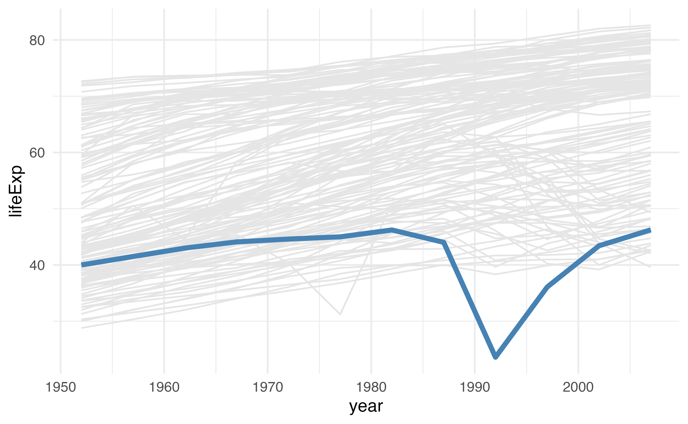
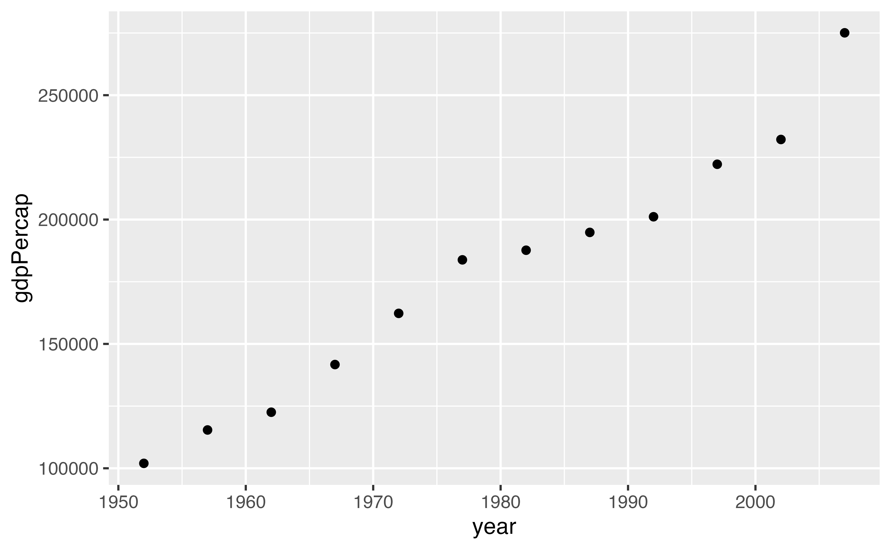

[1] 2Types, vectors, and functions in R
2025-08-08
Vectors and Types
Vectors
c(1, 3, 5)
c(TRUE, FALSE, TRUE, TRUE)
c("red", "blue")
Vectors
Vectors have 1 dimension
Vectors have a length
Types
Numeric/double (c(1.0, 2.0, 3.0))
Integer (c(1L, 2L, 3L))
Character (c("a", "b", "c"))
Factor (factor(c("a", "b", "c")))
Logical (TRUE)
Dates and times
Packages to work with types and classes
Strings/character: stringr
Factors: forcats
Dates: lubridate
Making vectors
Your Turn 1
Create a character vector of colors using c(). Use the colors "grey90" and "steelblue". Assign the vector to a name.
Use the vector you just created to change the colors in the plot below using scale_color_manual(). Pass it using the values argument.
Your Turn 1
Your Turn 1

Working with vectors
Subset vectors with [] or [[]]
Working with vectors
Modify elements
Working with vectors
Modify elements
[1] 1 100 7Working with vectors
Modify elements
[1] 1 NA 7cols <- c("grey90", "steelblue")
gapminder |>
mutate(rwanda = ifelse(country == "Rwanda", TRUE, FALSE)) |>
ggplot(aes(year, lifeExp, color = rwanda, group = country)) +
geom_line(
data = function(x) filter(x, !rwanda),
color = cols[[1]]
) +
geom_line(
data = function(x) filter(x, rwanda),
color = cols[[2]],
linewidth = 1.5
) +
theme_minimal()
Your Turn 2
Create a numeric vector that has the following values: 3, 5, NA, 2, and NA.
Try using sum(). Then add na.rm = TRUE.
Check which values are missing with is.na(); save the results to a new object and take a look
Change all missing values of x to -9999.
Try sum() again without na.rm = TRUE.
Your Turn 2
Your Turn 2
Your Turn 2
Writing Functions
Functions that return vectors
Functions that return data frames
gapminder |>
group_by(year) |>
filter(continent == "Americas") |>
summarize(gdpPercap = sum(gdpPercap))# A tibble: 12 × 2
year gdpPercap
<int> <dbl>
1 1952 101977.
2 1957 115401.
3 1962 122539.
4 1967 141706.
5 1972 162283.
6 1977 183800.
7 1982 187668.
8 1987 194835.
9 1992 201123.
10 1997 222233.
11 2002 232192.
12 2007 275076.Functions that make plots
Why write functions?
To make repetitive code reusable
To make complex code understandable
To make useful code shareable
Writing functions

Writing functions

Writing functions

Writing functions

Your Turn 3
Create a function called sim_data that doesn’t take any arguments.
In the function body, we’ll return a tibble.
For x, have rnorm() return 50 random numbers.
For sex, use rep() to create 50 values of “male” and “female”. Hint: You’ll have to give rep() a character vector for the first argument. The times argument is how many times rep() should repeat the first argument, so make sure you account for that.
For age use the sample() function to sample 50 numbers from 25 to 50 with replacement.
Call sim_data()
Your Turn 3
Your Turn 3
# A tibble: 50 × 3
x sex age
<dbl> <chr> <int>
1 -1.19 male 42
2 2.07 female 45
3 -0.174 male 50
4 0.420 female 36
5 -1.18 male 47
6 0.839 female 44
7 0.240 male 25
8 -0.392 female 25
9 0.274 male 45
10 -0.251 female 30
# ℹ 40 more rowsE-Values
The strength of unmeasured confounding required to explain away a value
Rate ratio: 3.9 = E-value: 7.3
Your Turn 4
Write a function to calculate an E-Value given an RR.
Call the function evalue and give it an argument called estimate. In the body of the function, calculate the E-Value using estimate + sqrt(estimate * (estimate - 1))
Call evalue() for a risk ratio of 3.9
Your Turn 4
Control Flow
Control Flow
Control Flow
Make a prediction
What will y be?
[1] "z"If statements are for a single TRUE or FALSE
Conditional values with vectors
Conditional values with vectors
If-else with vectors
Validation and stopping
if (is.numeric(x)) stop(), warn()
Your Turn 5
Use if () together with is.numeric() to make sure estimate is a number. Remember to use ! for not.
If the estimate is less than 1, set estimate to be equal to 1 / estimate.
Call evalue() for a risk ratio of 3.9. Then try 0.80. Then try a character value.
Your Turn 5
Your Turn 5
Your Turn 6
Add a new argument called type. Set the default value to "rr"
Check if type is equal to "or". If it is, set the value of estimate to be sqrt(estimate)
Call evalue() for a risk ratio of 3.9. Then try it again with type = "or".
Your Turn 6
Your Turn 6
Your Turn 7: Challenge!
Create a new function called transform_to_rr with arguments estimate and type.
Use the same code above to check if type == "or" and transform if so. Add another line that checks if type == "hr". If it does, transform the estimate using this formula: (1 - 0.5^sqrt(estimate)) / (1 - 0.5^sqrt(1 / estimate)).
Move the code that checks if estimate < 1 to transform_to_rr (below the OR and HR transformations)
Return estimate
In evalue(), change the default argument of type to be a character vector containing “rr”, “or”, and “hr”.
Get and validate the value of type using match.arg(). Follow the pattern argument_name <- match.arg(argument_name)
Transform estimate using transform_to_rr(). Don’t forget to pass it both estimate and type!
Your Turn 7: Challenge!
transform_to_rr <- function(estimate, type) {
if (type == "or") estimate <- sqrt(estimate)
if (type == "hr") {
estimate <-
(1 - 0.5^sqrt(estimate)) / (1 - 0.5^sqrt(1 / estimate))
}
if (estimate < 1) estimate <- 1 / estimate
estimate
}
evalue <- function(estimate, type = c("rr", "or", "hr")) {
# validate arguments
if (!is.numeric(estimate)) stop("`estimate` must be numeric")
type <- match.arg(type)
# calculate evalue
estimate <- transform_to_rr(estimate, type)
estimate + sqrt(estimate * (estimate - 1))
}Your Turn 7: Challenge!
Programming with the tidyverse
Pass the dots: ...
Pass the dots: ...
# A tibble: 1,704 × 2
pop year
<int> <int>
1 8425333 1952
2 9240934 1957
3 10267083 1962
4 11537966 1967
5 13079460 1972
6 14880372 1977
7 12881816 1982
8 13867957 1987
9 16317921 1992
10 22227415 1997
# ℹ 1,694 more rowsYour Turn 8
Use ... to pass the arguments of your function, filter_summarize(), to filter().
In summarize, get the n and mean life expectancy for the data set
Check filter_summarize() with year == 1952.
Try filter_summarize() again for 2002, but also filter countries that have the word ” and ” in the country name (e.g., it should detect “Trinidad and Tobago” but not “Iceland”). Use str_detect() from the stringr package.
Your Turn 8
Writing functions with dplyr, ggplot2, and friends
Error in `geom_histogram()`:
! Problem while computing aesthetics.
ℹ Error occurred in the 1st layer.
Caused by error:
! object 'lifeExp' not foundProgramming with dplyr, ggplot2, and friends
Error in `geom_histogram()`:
! Problem while computing stat.
ℹ Error occurred in the 1st layer.
Caused by error in `setup_params()`:
! `stat_bin()` requires a continuous x aesthetic.
✖ the x aesthetic is discrete.
ℹ Perhaps you want `stat="count"`?